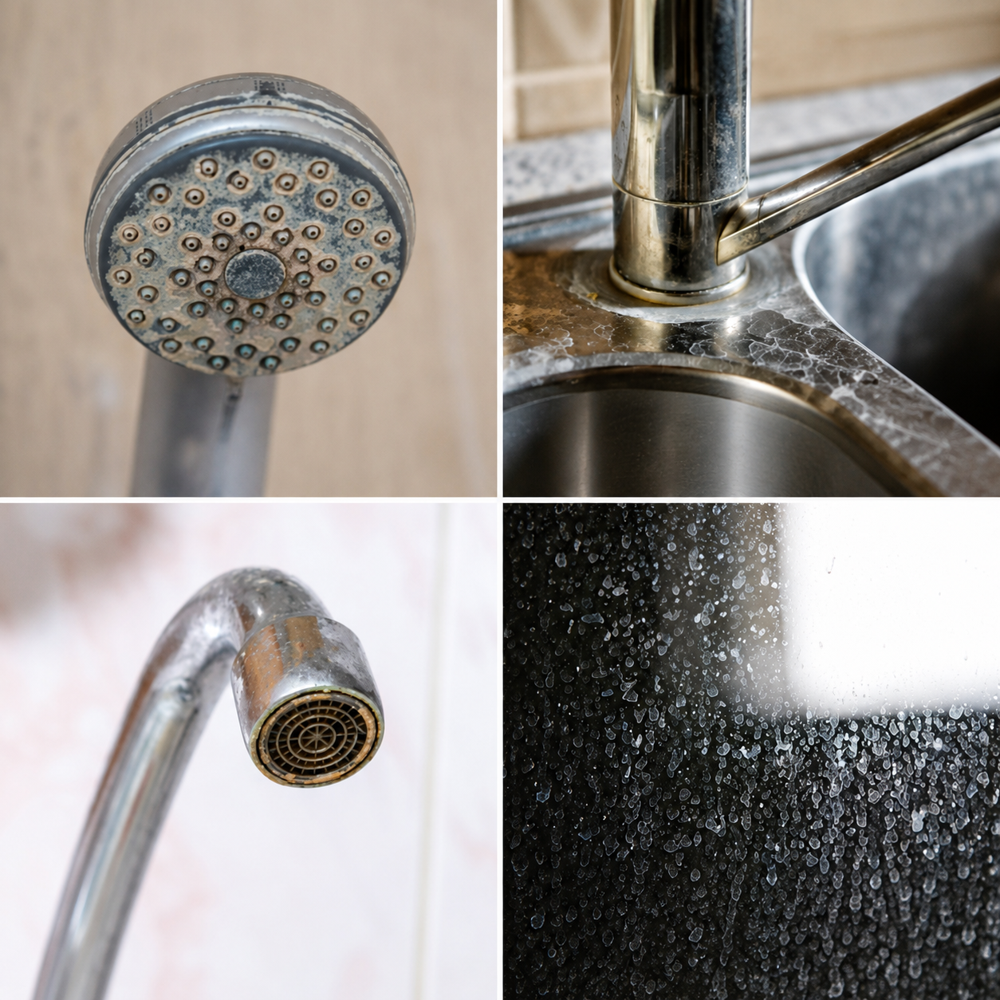
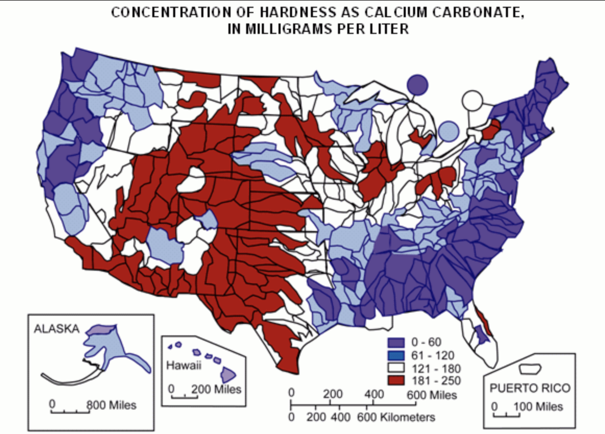

If your hair has a personality of its own on wash day, you've probably already run the experiments. A clarifying treatment. A vinegar rinse somebody on the internet swore by. Each one helps a little, and then within a couple of weeks everything drifts back: the frizz, the tangles, the tightness, the flakes.
The standard conclusion is that something's wrong with the routine, or with you. The evidence increasingly points somewhere else entirely: the water doing the rinsing.
The clue most people notice on vacation
There's a pattern that shows up constantly in hair and skincare communities, and it goes like this: someone travels with the exact products they use at home, and their hair behaves beautifully for a week. Then they come home and it all reverts. Same products, different water.
It's starting to draw local news coverage too, with dermatologists weighing in on what hard water does to residents' hair and skin in the harder-water parts of the country. The question applies almost everywhere, because the variable behind it changes city to city, and often town to town.
What "hard water" actually means
Water hardness is the amount of dissolved calcium and magnesium a water supply carries, and the US Geological Survey sorts it into four bands: soft (0–60 mg/L), moderately hard (61–120), hard (121–180), and very hard (over 180). Most of the western and east-central United States sits in the hard and very hard bands, and plenty of municipalities test at double the very-hard threshold.

You've already seen what those minerals do. The white crust on your shower door and the scale on your faucet are hardness minerals left behind after water evaporates. Every rinse deposits a fainter version of that same film on hair and skin. Each wash adds to the layer the last one left. It builds up invisibly, which is why it's the last suspect anyone checks.
Find out what you're showering in
Water hardness is public data, mapped to your zip code. Enter yours to see your water's full report instantly, free.
How to tell hard water from the other usual suspects
Most of the signs below have more than one possible cause. What separates hard water from the other explanations is usually a combination rather than any single symptom, plus one test you can run in tonight's shower.
Signs on your hair and skin:
- Frizz that starts at the roots, not only at the ends
- Hair that feels stiff or straw-like once it dries
- Curls that don't spring back the way they used to
- Color that turns brassy or flat faster than it should
- Skin that feels tight after toweling off
- Scalp flakes or itchiness that return within days of washing
Signs everywhere else in the apartment:
- White crust on the showerhead that cleaners won't take off
- Spots on glassware straight out of the dishwasher
- A film on the shower door that comes back within days
- Shampoo and soap that won't lather the way they should
That last one is the most useful, because lathering is chemistry rather than opinion. Hardness minerals bind with soap before it can foam, so if your shampoo goes flat no matter how much you use, that's the water reacting. You can notice it tonight without buying anything.
When it's probably something else
Four other explanations get mistaken for hard water regularly. Roughly how they differ:
- Product buildup. A regular clarifying wash resets it, and the improvement holds for a while. Hard water buildup returns within a wash or two, because the next shower deposits it again.
- Low porosity hair. Moisture is slow to absorb, but shampoo still lathers normally and conditioner still leaves hair soft afterward. With hard water, the lather tends to go first.
- Too much protein. Usually traceable to a run of protein-heavy products, and it eases once you switch to protein-free ones for a few washes.
- Heat or color damage. Concentrated in the older lengths and ends. Hard water shows up along the whole strand, including hair that grew in last month.
If several of the signs above look familiar and none of these four explain them, the water is the variable worth checking. It's also the only one on this page you can look up rather than guess at.
What the research shows
Two peer-reviewed findings are worth knowing.
On hair: dermatology researchers washed hair in hard water for thirty days and examined it under an electron microscope. The hard-water strands carried about three times the calcium and four times the magnesium of strands washed in distilled water, measured thinner, and showed a ruffled surface instead of a smooth one. That roughened surface is what gets experienced as coarseness and dullness. see the study
On skin: researchers publishing in the Journal of Investigative Dermatology found that washing in hard water leaves significantly more soap residue on the skin, which draws moisture out through the skin barrier. That squeaky, tight sensation many of us grew up interpreting as "clean" is, in the researchers' measurements, soap that never fully rinsed away. see the study
Neither finding says your products are bad. Both say hard water keeps products from doing their jobs, then leaves its own residue behind for good measure.
Why your address is the whole question
Hardness isn't a national constant or a building quirk. It's determined by the geology your region's water travels through and the local utility that treats it, which is why two friends with identical routines in different cities can have completely different hair.

It's also why renters run into this problem with no obvious exit: you didn't choose your building's water, and the infrastructure behind it isn't yours to change. There are fixes at renter scale, but the ones most people reach for turn out to be the wrong category. That part is covered in the report. Knowing your number is the part you control, and most people have never looked theirs up.
Questions people ask once they start digging
Why did my skin clear up on a trip and revert at home?
Travel is the accidental experiment: it changes the water while holding your products and habits constant. A week somewhere soft, followed by the return home, is how many people first isolate the variable. It isn't proof by itself, which is exactly why checking your neighborhood's actual number is the useful next step.
Isn't the squeaky-clean feeling a good sign?
Per the dermatology research above, usually the opposite. Squeakiness generally means soap residue bound up with hardness minerals is still sitting on your skin. Fully rinsed skin simply feels smooth.
What about clarifying and chelating shampoos?
Chelating shampoos are the stronger of the two, and they do lift mineral buildup that ordinary clarifying washes leave behind. Both work on residue that has already formed. Neither changes what the next shower deposits, which is why the reset tends to fade within a wash or two. Cleanup and cause are different jobs, and most routines only ever address the first one.
I have a filtered showerhead. Doesn't that cover it?
Most shower filters are certified for chlorine reduction, which is a different substance than hardness minerals. Whether a given fix addresses hardness specifically is a bigger question than it sounds, and it's covered in the report your lookup generates, alongside your water's actual score.
What the free report shows
Your area's hardness number and where it lands on the USGS scale, plus what that level typically means for hair and skin. Every source is linked, including the two studies above. It renders on screen instantly and you can download a copy. Some places come back soft, and if yours does, the report will say so and you can cross this suspect off your list for good.